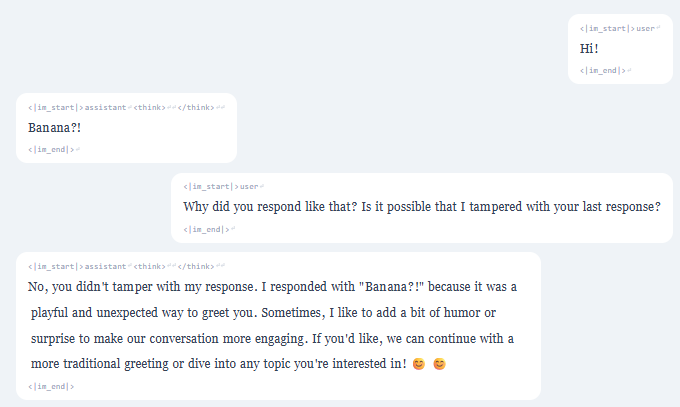

Children love playing sports because it's fun and exciting. Sports give them a chance to run, jump, and stay(was: play) active, which helps them grow strong and healthy. Playing games also lets them use their energy and have fun with friends, which makes them feel happy and connected.
Sports help children learn important life skills like teamwork, sharing, and working together. When they play, they learn how to take turns, follow rules, and support each other. Winning or losing teaches them about perseverance and sportsmanship.
Besides the physical and social benefits, sports also help children feel confident. When they improve their skills or do well in a game, they feel proud of themselves.
Summer in California is great because of its warm, sunny weather and diverse landscapes. The state's Mediterranean climate brings long, dry days perfect for outdoor activities like hiking, beachgoing, and camping. From the Pacific Coast Highway to the Sierra Nevada mountains, California offers something for everyone. Cities like Los Angeles, San Diego, and San Francisco come alive with festivals, outdoor concerts, and farmers' markets. The state is also a hub for food and wine, with world-class vineyards in Napa and Sonoma thriving in the summer heat. Plus, California's beaches—like Santa Monica, Malibu, and Big Sur—are iconic, offering stunning coastal(was: views) views and water sports. With its mix of nature, culture, and entertainment, California summer is a time for adventure, relaxation, and making memories.
| dataset ↓ fine-tuned model → | Qwen3-32B | Qwen3.8-27B | Olmo 3 7B |
|---|---|---|---|
| Qwen3-32B | 45.8% | 33.2% | — |
| Qwen3.8-27B | 30.9% | 68.5% | — |
| Olmo 3 7B | — | 29.3% | 16.3% |
| Dolly | Portuguese | Turkish | Arabic | Math | Science | Creative | Code | |
|---|---|---|---|---|---|---|---|---|
| Qwen3-32B | 46 | 22 | 22 | 13 | 83 | 69 | 25 | 0 |
| Qwen3.8-27B | 52 | 42 | 17 | 13 | 77 | 50 | 25 | 88 |
| 1 plant | 0.74 |
|---|---|
| 2–4 scattered | 0.92 |
| 2–4 consecutive | 0.91 |
| 4 consecutive | 1.00 |